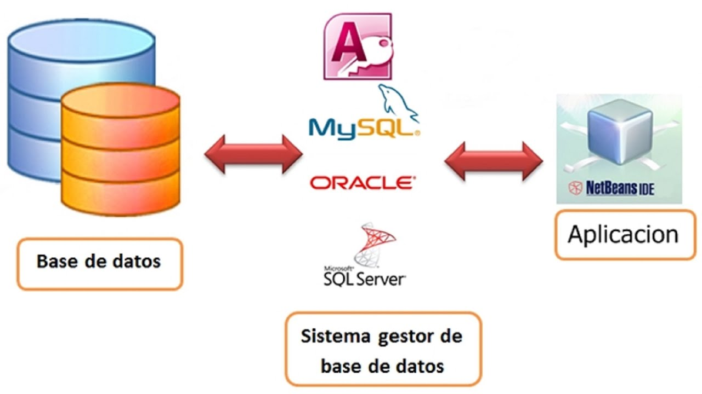

Conceptos Avanzados
En esta sección profundizamos en temas avanzados relacionados con la conexión de bases de datos en aplicaciones web:
- Transacciones: Cómo manejar múltiples operaciones en la base de datos de manera segura y consistente.
- ORM (Object Relational Mapping): Introducción al uso de herramientas como Hibernate o Sequelize para simplificar la interacción con bases de datos.
- Conexión Segura: Uso de certificados SSL/TLS para proteger las conexiones.
- Pool de Conexiones: Implementación de técnicas para optimizar la gestión de conexiones a bases de datos en aplicaciones de alto rendimiento.
Video Explicativo
Una conexión de base de datos es un archivo de configuración en el que se especifican los detalles físicos de una base de datos, como el tipo de base de datos y la versión, y los parámetros para habilitar una conexión JDBC de IBM® Integration Toolkit a la base de datos.
